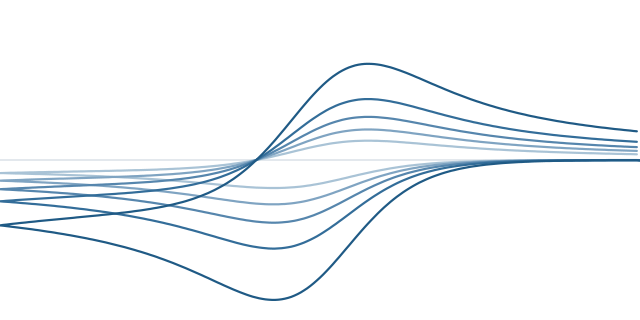
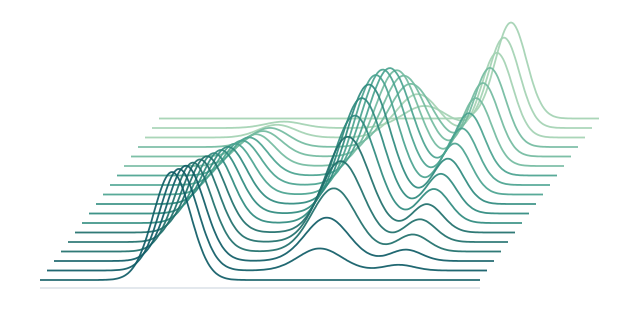

CVSim
Simulation of voltammograms and electrochemical mechanisms: a mechanism written as on the board, solved with diffusion, electron transfer, coupled chemistry and adsorption; eight techniques.
Three programs for electrochemistry and spectroelectrochemistry: simulate, fit, process
Academic software, free of charge, for Windows and Linux. No MATLAB licence required.

Simulation of voltammograms and electrochemical mechanisms: a mechanism written as on the board, solved with diffusion, electron transfer, coupled chemistry and adsorption; eight techniques.

Fitting experimental data with physical models: about ninety models, from the Nernst equation to host-guest titrations, each fitted value with its standard error.

Processing and visualization of spectroelectrochemical data: 3-D surfaces and maps, filters, peak detection, merging, and multivariate curve resolution (MCR-ALS).
DataFit reads the curves CVSim saves, as it reads Metrohm Autolab and CH Instruments files, and fits them. It also merges and splits the component files of SECPlot, and shares its file readers with it. Each of them is checked, version after version, against hundreds of recorded cases.
The demo version needs no formality: everything runs and is shown, nothing is saved. The full version is granted, free of charge too, to users registered with an academic address. On a computer, the three programs show the same installation code; each program has its own registration. Without a connection, the full version stays active for seven days after the last check.
Each program has its licence of use, free of charge: CVSim, DataFit, SECPlot. They may be installed on as many computers as wished and passed on unchanged; they may not be modified. They come with absolutely NO WARRANTY.
At the first start with a network, each program asks whether it may send an anonymous usage record; it is sent only if you agree, and the choice can be changed at any time (Settings in CVSim, Help ▸ Register in DataFit and SECPlot). The record holds the date, the version, the operating system, how the program runs, the country of the regional settings and an installation number drawn at random — no name, no IP address, no computer name, nothing about your work. Its only use is to know how many installations use the programs.
For the full version, the academic address entered in a program stays on the computer: the program downloads the list of registrations, which holds only fingerprints of the addresses, never the addresses themselves, and compares on the spot. A registration holds for one installation, named by a code computed from the identifier the system gives the computer (that identifier is never sent), distinct from the number of the usage record.
This site sets no cookie, loads nothing from another site and measures no audience.